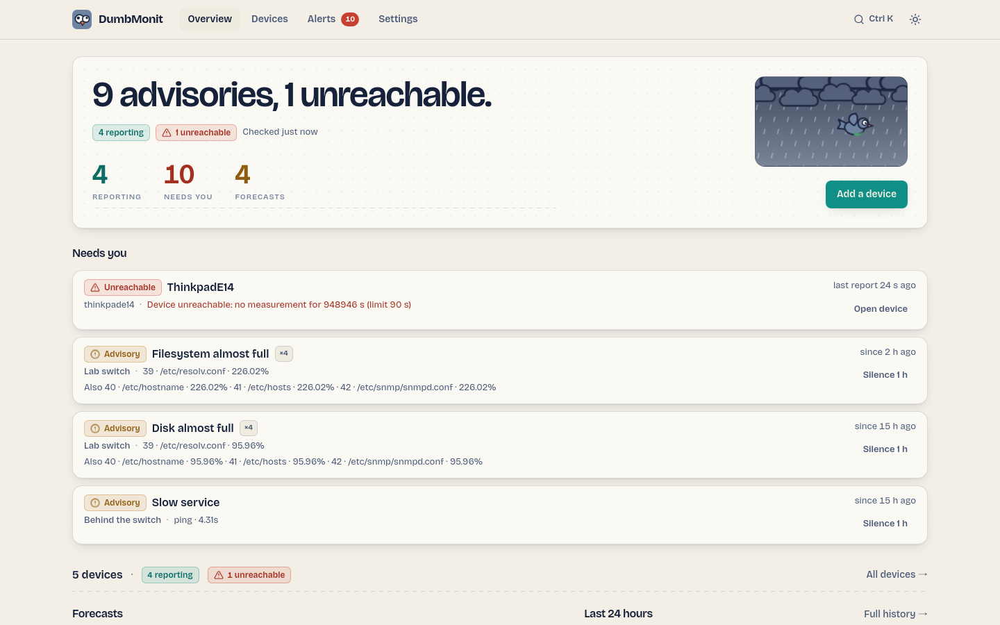

Install with Docker¶
DumbMonit runs as one container: the dumbmonit server (collection, API,
alerting, web UI) starts its own VictoriaMetrics for time series storage; the
binary ships in the image. Configuration and state live in an embedded SQLite
database. One volume, /data, holds the database, the instance secret and the
time series.
Prerequisites¶
- Docker Engine with the Compose plugin (
docker compose versionworks). - A machine that can reach the devices you want to monitor. It does not need to be reachable from them, except for agents, which push their measurements to the server over HTTP.
- Port
8080free on the host, or another port of your choice (see below).
The Compose file¶
This is the docker-compose.yml from the repository; save it in a directory
of its own:
# One container: the DumbMonit server runs its own VictoriaMetrics (embedded in
# the image) and keeps everything under a single volume. To use an external
# VictoriaMetrics instead, set DUMBMONIT_VM_URL and the embedded one is not started.
name: dumbmonit
services:
dumbmonit:
# `docker compose up -d` pulls the published image (latest release; use
# `:edge` for the last commit on main). To build from this checkout instead,
# run `docker compose up -d --build`: the result is tagged with the same name
# and used from then on.
image: ghcr.io/noekan/dumbmonit:latest
build: .
ports:
# The host port is configurable: 8080 is a crowded port on a homelab
# machine. `DUMBMONIT_PORT=8099 docker compose up -d` moves it.
- "${DUMBMONIT_PORT:-8080}:8080"
volumes:
# SQLite database, instance secret and the time series (/data/vm).
- dumbmonit-data:/data
environment:
# Uncomment to set the secret yourself instead of letting DumbMonit
# generate it in /data/secret.key. It encrypts device credentials: losing
# it means re-entering every one of them.
# DUMBMONIT_SECRET: replace-me-with-32-random-characters
# Lost password: `DUMBMONIT_RESET_PASSWORD=1 docker compose up -d` clears
# the password at startup and the UI asks for a new one; then start again
# without the variable.
DUMBMONIT_RESET_PASSWORD: ${DUMBMONIT_RESET_PASSWORD:-}
# Embedded VictoriaMetrics: retention (months, or e.g. 30d / 2y) and the
# memory budget of its caches. A homelab of a few dozen devices fits in
# 256 MB; raise it when you monitor hundreds of hosts.
DUMBMONIT_VM_RETENTION: ${DUMBMONIT_VM_RETENTION:-12}
DUMBMONIT_VM_MEMORY: ${DUMBMONIT_VM_MEMORY:-256MB}
# External VictoriaMetrics instead of the embedded one:
# DUMBMONIT_VM_URL: http://victoriametrics:8428
# Only needed for "ping" (ICMP) monitors:
# cap_add:
# - NET_RAW
# The server stops VictoriaMetrics after itself: leave it the time to do so.
stop_grace_period: 30s
restart: unless-stopped
volumes:
dumbmonit-data:
# Fixed name, independent of the compose project name: the volume is what
# you back up and what an upgrade must find again.
name: dumbmonit-data
Then start it:
docker compose up -d
Building the image yourself
docker compose up -d pulls the published image and ignores build: ..
From a clone of the repository, docker compose up -d --build builds the
same image locally instead (about ten minutes cold; no Rust or Node
toolchain is needed on the host). Use that to run from source or from a
branch.
Embedded VictoriaMetrics¶
The image contains the VictoriaMetrics binary (/victoria-metrics-prod, from
victoriametrics/victoria-metrics:v1.152.0). When DUMBMONIT_VM_URL is not
set, the server starts it as a child process listening on 127.0.0.1:8428,
stores its series under /data/vm, forwards its log lines into its own log,
restarts it with a backoff if it dies and stops it at shutdown. Nothing is
published: the port stays inside the container.
Two variables are worth knowing: DUMBMONIT_VM_RETENTION (12 months by
default; 30d or 2y work too) and DUMBMONIT_VM_MEMORY (256MB, the
budget of its caches; raise it for hundreds of hosts). The rest is in the
configuration reference.
To use a VictoriaMetrics you already run, set DUMBMONIT_VM_URL to its
address (http://host:8428): the embedded one is then not started and
/data/vm stays empty.
First start¶
Open http://<your-host>:8080. A fresh instance shows the /setup screen and
asks you to choose a password (at least 12 characters). That single password
protects the whole instance; there are no user accounts. Once it is set, you are
sent to /login.

Then add your first device: see Add your first device.
Environment variables¶
Everything goes through environment variables; none is required.
| Variable | Default | Role |
|---|---|---|
DUMBMONIT_BIND |
0.0.0.0:8080 |
Listen address inside the container. |
DUMBMONIT_DATA_DIR |
/data |
SQLite database (dumbmonit.db), instance secret (secret.key) and the embedded VictoriaMetrics data (vm/). |
DUMBMONIT_VM_URL |
(unset) | URL of an external VictoriaMetrics. When set, the embedded one is not started. |
DUMBMONIT_VM_RETENTION |
12 |
Retention of the embedded VictoriaMetrics: months, or 30d, 2y. |
DUMBMONIT_VM_MEMORY |
256MB |
Memory budget of the embedded VictoriaMetrics' caches. |
DUMBMONIT_VM_LISTEN |
127.0.0.1:8428 |
Listen address of the embedded VictoriaMetrics, inside the container. |
DUMBMONIT_SECRET |
(generated) | Instance secret that encrypts device credentials and tokens. |
DUMBMONIT_MAX_CONCURRENT_PROBES |
64 |
Concurrent probes, all collectors combined. |
DUMBMONIT_PROBE_TIMEOUT_SECS |
10 |
Maximum duration of one probe. |
DUMBMONIT_FLUSH_INTERVAL_SECS |
5 |
Write period towards VictoriaMetrics. |
DUMBMONIT_LOG |
info |
Log filter (tracing syntax, e.g. debug, dumbmonit=trace). |
DUMBMONIT_AGENT_DIR |
/agents |
Agent binaries served under /download/…. |
DUMBMONIT_RESET_PASSWORD |
(empty) | Set to 1 to clear the password and every session at startup. |
DUMBMONIT_COOKIE_SECURE |
(off) | Set to 1 behind a TLS reverse proxy to mark the session cookie Secure. |
DUMBMONIT_ALERT_INTERVAL_SECS |
30 |
Alert evaluation period (never below 10). |
DUMBMONIT_ALERT_HISTORY_DAYS |
90 days | Retention of alert history. See the configuration reference for a caveat about its unit. |
The full list, with details, is in the configuration reference.
EZYMONIT_* names from before the rename are still read as a fallback; see
Upgrading.
Back up the secret key¶
SNMP communities, passwords and API tokens are encrypted with AES-256-GCM using a
key derived from the instance secret. On first start, DumbMonit generates this
secret in /data/secret.key (inside the dumbmonit-data volume).
Back up secret.key together with the database
Without it, device credentials are unrecoverable. The server detects a missing or changed key at startup and refuses to continue with an explicit message, rather than failing silently on every probe.
If you prefer to own the secret, set DUMBMONIT_SECRET in the Compose file
instead (32 random characters or more). Keep it in your password manager.
Upgrading¶
docker compose pull
docker compose up -d
Database migrations run at startup. VictoriaMetrics data is untouched.
From EzyMonit, and from the two-container setup¶
DumbMonit was called EzyMonit until September 2026, and ran as two containers,
the server and a separate victoriametrics service. Upgrading needs the data
of the old project moved into the new volume once. The old project was named
ezymonit (its volumes ezymonit_ezymonit-data and ezymonit_vm-data;
docker volume ls confirms). From the old directory:
docker compose down
Then, with the new docker-compose.yml:
docker volume create dumbmonit-data
docker run --rm -v ezymonit_ezymonit-data:/from -v dumbmonit-data:/to alpine cp -a /from/. /to/
docker run --rm -v ezymonit_vm-data:/from -v dumbmonit-data:/to alpine sh -c 'mkdir -p /to/vm && cp -a /from/. /to/vm/'
docker compose up -d
The old VictoriaMetrics data directory has the layout the embedded one uses:
nothing to convert. The alternative is to keep the external VictoriaMetrics and
point DUMBMONIT_VM_URL at it.
What the server handles on its own at the first start:
EZYMONIT_*variables are still read as a fallback, with one startup warning per variable (EZYMONIT_X is deprecated, use DUMBMONIT_X)./data/ezymonit.dbis renamed todumbmonit.db.- Agent tokens
ezym_…keep working; new ones aredmon_…. Agents keep pushing; re-run the install command on each machine when convenient, it migrates the old service in place. - The session cookie changed name: everyone logs in again once. The browser's theme preference is carried over.
What it does not handle: the metric prefix changed from ezymonit_ to
dumbmonit_ with no compatibility. The old series stay in VictoriaMetrics under
the old name and age out with the retention; graphs and built-in rules restart
from the upgrade. Custom alert rules that name ezymonit_… metrics must be
edited.
Backup and restore¶
One named volume, dumbmonit-data, holds everything:
| Path | Contents |
|---|---|
dumbmonit.db |
Devices, rules, channels, alert state, sessions. |
secret.key |
The instance secret. |
vm/ |
VictoriaMetrics time series (12 months of retention by default). |
The volume has a fixed name, whatever the directory of the Compose file is called. To back up, stop the stack and archive it:
docker compose stop
docker run --rm -v dumbmonit-data:/data -v "$PWD:/backup" alpine \
tar czf /backup/dumbmonit-data.tgz -C /data .
docker compose start
To restore, create the volume, extract the archive into it the same way, then
docker compose up -d.
If space matters, --exclude=./vm keeps the archive small: the database and
the secret are the setup, vm/ is only the graphs.
Changing the port¶
Set DUMBMONIT_PORT when starting:
DUMBMONIT_PORT=8099 docker compose up -d
Or put DUMBMONIT_PORT=8099 in a .env file next to the Compose file.
Reverse proxy¶
The UI and the API are served on one port over plain HTTP. No WebSocket is used: the interface polls the API, so any reverse proxy works without special configuration.
monit.example.com {
reverse_proxy 127.0.0.1:8080
}
server {
listen 443 ssl;
server_name monit.example.com;
# ssl_certificate / ssl_certificate_key …
location / {
proxy_pass http://127.0.0.1:8080;
proxy_set_header Host $host;
proxy_set_header X-Forwarded-Proto $scheme;
# Agents send catch-up batches after an outage:
client_max_body_size 16m;
}
}
When the proxy terminates TLS, set DUMBMONIT_COOKIE_SECURE: "1" so the session
cookie is only sent over HTTPS. Do not set it on a plain-HTTP deployment: the
browser would never send the cookie back and login would be impossible.
Agents behind a proxy
The install command shown when you create an agent token uses the URL your
browser used to reach the UI. If that is the proxied URL, agents will use it
too: make sure /install.sh, /install.ps1, /download/… and /api/ingest
pass through the proxy.
ICMP ping needs NET_RAW¶
The final image is built FROM scratch and gets no capability. The
ping monitor needs to open a raw ICMP socket, so
uncomment these lines under the dumbmonit service and restart it:
cap_add:
- NET_RAW
Without it, a ping monitor reports a configuration error (shown on the device, not notified), never a false "host down".
Testing without hardware¶
The repository ships a development overlay with a lab SNMP agent:
docker compose -f docker-compose.yml -f docker-compose.dev.yml up -d
Add an SNMP device with address snmp-lab and community public: the profile
is detected automatically and interfaces, memory and processes show up. The
overlay also publishes the embedded VictoriaMetrics on the host's :8428
(DUMBMONIT_VM_LISTEN=0.0.0.0:8428). Alternatively, add a
demo device: it produces fake measurements with nothing to
prepare.